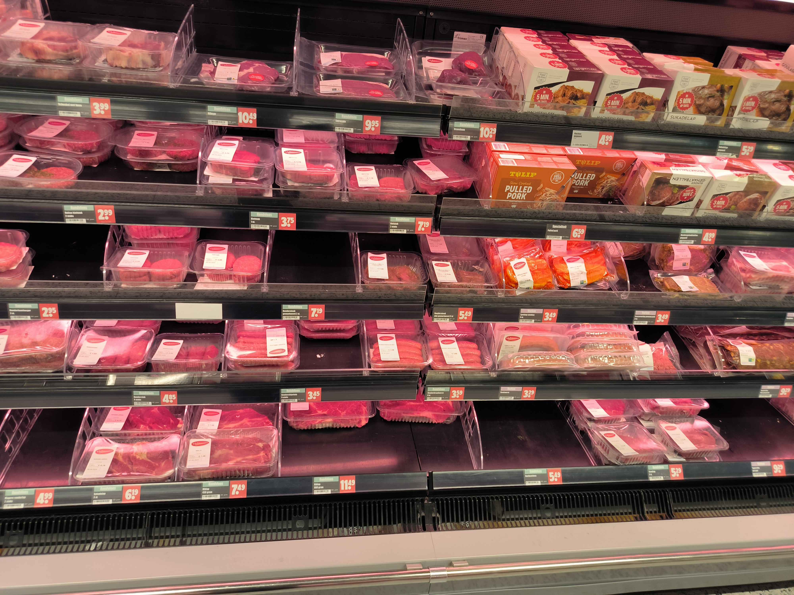
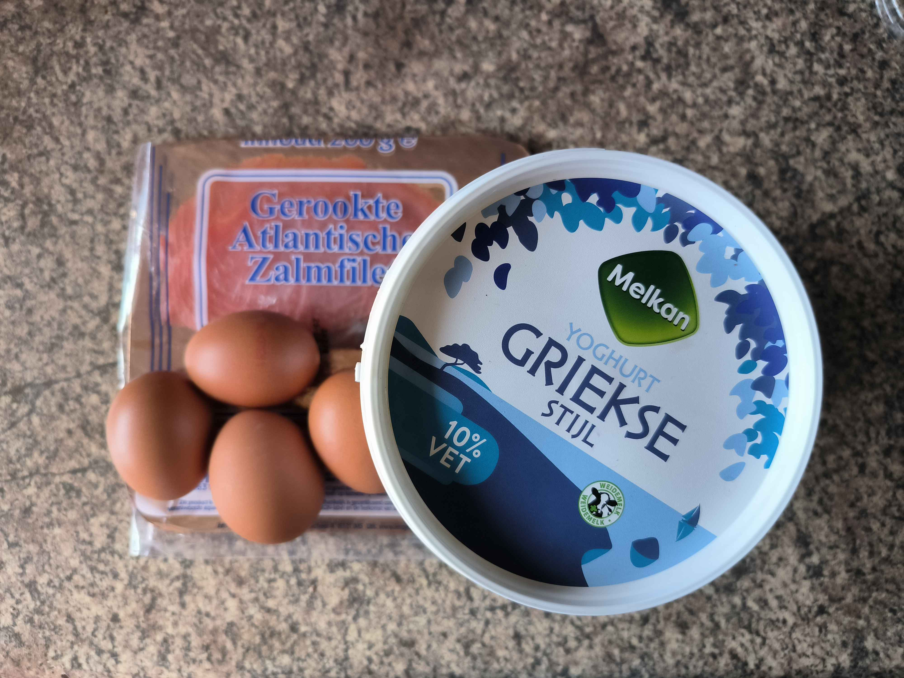
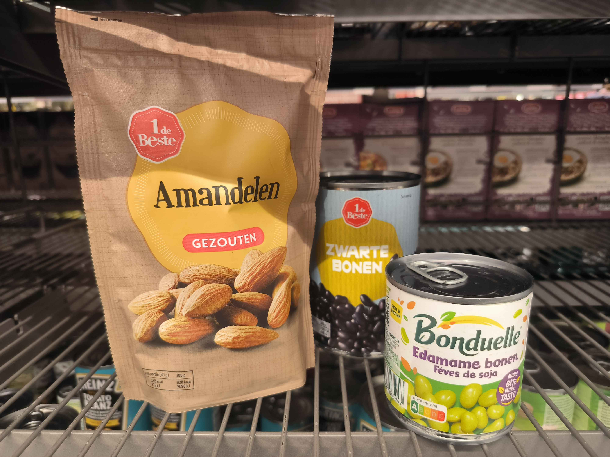

Protein is an essential nutrient, especially for those with an active lifestyle. It plays a key role in muscle repair, growth, and overall body function, making it one of the most important components of your diet.
What is Protein?
Protein is a macronutrient composed of amino acids, which are the building blocks of your body. Whether you're lifting weights, running, or doing high-intensity training, your muscles experience wear and tear. Protein helps to repair and rebuild muscle tissues, allowing you to recover faster and grow stronger.
Why Is Protein Important?
For athletes, gym-goers, or anyone leading an active life, protein is vital for:
Muscle Growth and Repair: After exercise, your muscles need protein to recover and grow.
Immune Function: Protein supports your body’s defense mechanisms, keeping your immune system strong.
Hormone Production: Protein helps produce hormones, such as insulin and growth hormone, that regulate your metabolism and promote muscle growth.
Satiety: Eating protein-rich foods can help you feel full longer, making it easier to manage your weight or muscle gain goals.
Where Can You Get Protein?
Protein can be found in both animal and plant-based foods. Here are some excellent sources:
Animal-Based Protein:
Lean meats: Chicken, turkey, beef
Fish and seafood: Salmon, tuna, shrimp
Dairy: Greek yogurt, cottage cheese, milk
Eggs

Meat

Eggs, Greek yogurt and salmon
Plant-Based Protein:
Legumes: Lentils, chickpeas, black beans
Soy products: Tofu, tempeh, edamame
Nuts and seeds: Almonds, chia seeds, sunflower seeds
Whole grains: Quinoa, buckwheat

Almonds, black beans and edamame
How Much Protein Do You Need?
The amount of protein you need depends on your body weight, activity level, and fitness goals. To maintain muscle mass, athletes and active individuals generally need more protein than the average person. Our recommendation is to estimate your protein needs. Depending on your activity level and goals, the general guideline is:
Sedentary: 0.8g of protein per kg of body weight
Active: 1.2–2.2g of protein per kg, especially if you're looking to build or maintain muscle mass